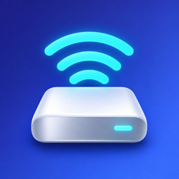

DiskBeam
Your iPhone, as a disk on your Mac.
Open the files on your iPhone, and the SSDs and SD cards plugged into it, straight from Finder on your Mac. No cable needed, no cloud, no Mac app to install.
How to connect
- Open the app on your iPhone and tap Turn on disk. Keep the app on screen while you use the disk.
- Make sure your Mac is on the same Wi-Fi, on your iPhone's hotspot, or connected with a cable.
- On your Mac, in Finder, choose Go → Connect to Server (⌘K) and paste the address the app shows.
- The first time, Finder shows a box about the disk's certificate. Check that the code matches the one in the app, then click Continue.
- Log in with the name and password the app shows. The disk appears in Finder.
Private by design
Files travel directly between your iPhone and your Mac, encrypted, over your own network. Nothing goes through our servers, because there are none. Every connection needs your password, and your Mac can only read until you allow changes.
Things to know
- iPhone pauses the disk when you leave the app and continues when you come back.
- Apps can only share what you pick: the app's own folder, folders from Files, and drives plugged into your iPhone.
Support
Questions or problems: email support@diskbeam.app. Please include your iPhone and macOS versions.